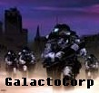

Forums galactiques > Taverne galactique : lieu de discussion informel > Découverte du jeu (HRP)
Pages : 1
| Arzma Réputation à la taverne : 8  07/03 ETU 10:13 | Score : 0 Détails Les gars, vos tchatches sont super-drôles mais on y trouve pas facilement des réponses - et faut voir le choix des titres! lol
Je vous propose donc un Topic basique (et austère ;) dédié à la découverte du jeu. Règle: chaque visiteur peut cliquer en haut à droite le bouton triangulaire d'alerte, sur les annonces et commentaires personnels, afin de les dégager (gentiment, cela va sans dire ;] Questions: 1) Une fois la technologie hyperfusion découverte (attention aux nouveaux: ça ouvre le systeme aux invasions de tous les autres Commandants... qui n'attendent que ça, d'après la rumeur ;) Une fois découverte, donc, y a-t-il bien un systeme associé et vierge qui apparait? Et comment l'identifier? 2) Peut-on voir une carte des autres systemes? Comment identifier les systemes "vierges" ou possédant des planetes non occupées? | ||
| Ace Azzamen Réputation à la taverne : 1199  07/03 ETU 10:17 | Score : 0 Détails En même temps, je ne te conseille pas d'alerter Dieu à tout bout de champ. Il apprécie moyennement ce genre de trucs. Il a autre chose à faire.
Autre chose: pour les systèmes ouverts, bien sûr que tout le monde arrive pour faire un rush (PS: je crois d'ailleurs que tu ferais bien de faire un tour à l'assemblée galactique, topic: Sombres Méditations) mais cela n'ouvre pas systématiquement un nouveau système. Les systèmes qui s'ouvrent "automatiquement" sont les systèmes pairs dès qu'un système ne possède plus aucune planète vierge. Ensouite ... On ne peut pas identifier les systèmes vierges, pour la bonne raison qu'il ne le restent pas longtemps [surtout avec le groupe de rapaces qui se prend tous les systèmes en ce moment ;)] et pour l'autre bonne raison qui serait que ce serait trop facile. | ||
| Belegûr Réputation à la taverne : 0  07/03 ETU 10:53 | Score : 0 Détails Aussi j'aimerais juste rappeler qu'il existe deux supports pour tout ce qui touche à l'aide des joueurs :
- le wiki : http://apocalypsis.free.fr/histoire/ - le forum externe : http://apocalypsis.free.fr/forum/ Sur le wiki, vous pourrez trouver différente info pour débuter, trouver des réponses à la plupart de vos questions. L'externe : vous pourrez trouver bcp de réponses à vos questions. Mais aussi des infos sur la prochaine version d'Apo. Enfin vous pourrez y poser vos questions. Les admins ou des joueurs (généralement anciens) vous répondront rapidement. |
Pages : 1
Forums galactiques > Taverne galactique : lieu de discussion informel > Découverte du jeu (HRP)